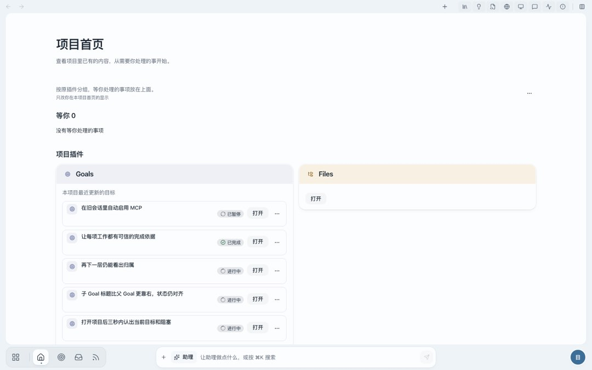
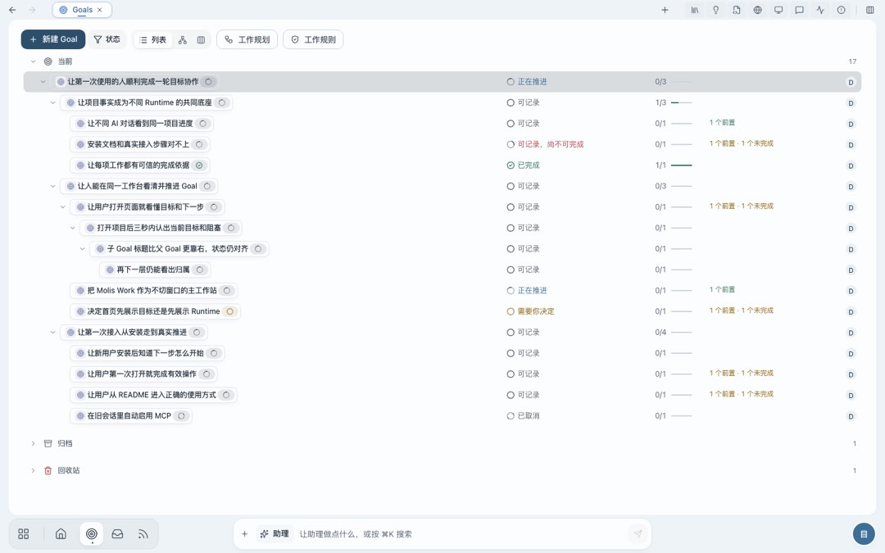
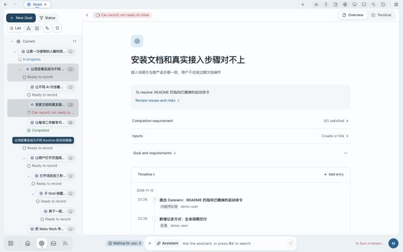
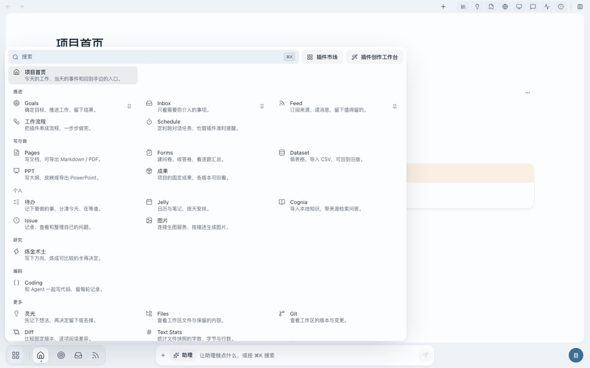
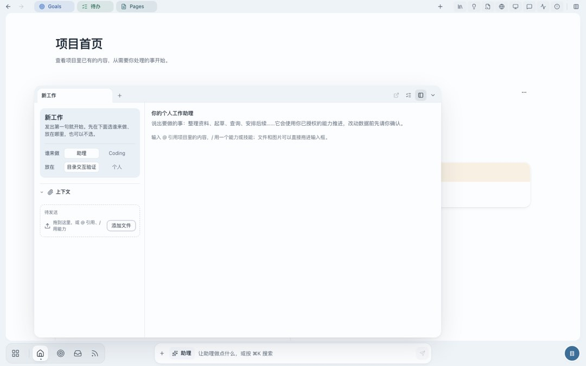
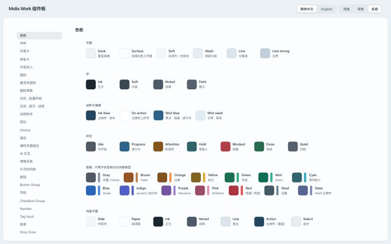

1a3a3ae1f · 给一骏的评估与方案工艺底子已经很好：字阶、圆角、触达尺寸、键盘路径、减少动效都守得住。短板在别处：界面很会回答「这是什么」，不太回答「我在哪」，几乎不回答「下一步做什么」。这份方案围绕这三问重排外壳、首页、列表、详情、引导、色阶、动效、组件板和文档。
依据：DESIGN.md、PRODUCT.md、工作台品味、路线书 01–89、事项线／主线／智能呈现／Work Brief／Onboarding 需求；在隔离的示例 Home 里实看了选择页、首页、插件切换器、Goals 列表与详情、待办、助理面板、设置、侧边资料和组件板（1440／1024／390，浅深色）。Inbox 与 Feed 在走查用的测试宿主里没有加载出来，这两页只按规范文字评估，没看实物。
工作台品味第 38 条写的主路径是「定位 → 看清事实 → 做下一步」。我按这三问给看到的每个界面打分：
| 界面 | 我在哪 | 现在怎样 | 下一步 | 主要原因 |
|---|---|---|---|---|
| 项目选择页 | 好 | 好 | 好 | 项目简报把在办的目标、进度条、接下来三件事放在一屏。它是现在最好的一页。 |
| 项目首页 | 一般 | 弱 | 弱 | 首屏三分之一是标题和说明文字；「等你 0」占着最好的位置；目标按最近更新排，已暂停和已完成排在最前。 |
| 工作台外壳 | 弱 | 一般 | 一般 | 屏幕上没有项目名，只有右下角一个字的头像；近 20 个不带文字的图标分在四个角。 |
| 插件切换器 | 好 | 一般 | 一般 | 二十多个插件一次全摊开，六个分组的分法不是同一个维度。 |
| Goals 列表 | 好 | 弱 | 弱 | 17 行里 14 行写着「可记录」；真正要处理的 1 行「需要你决定」淹在里面。 |
| Goal 详情 | 一般 | 一般 | 弱 | 状态是一句内部用语（「可记录，尚不可完成」），页面上没有主操作。 |
| 助理面板 | 一般 | 好 | 一般 | 盖住正在做的内容；开口前先要选「谁来做」「放在哪」。 |
| 待办、设置 | 好 | 好 | 好 | 入口即操作（一句话记下一件事），空态说得清楚。 |
选择页的简报和项目里的首页是同一份事实，却是两种水准。把简报的做法带进项目里，是这份方案里最省力、收益最大的一步。
每条写：看到了什么、违背了哪条规律。带编号的黄点标在现状截图上。

123456「本项目最近更新的目标」里，第一条已暂停，第二条已完成。人打开首页要找的是该自己处理的和做到一半的，最近改过不等于重要。
390 宽时每条目标占两行半，一屏只看得到两条，还是暂停和完成的那两条。

12345规律：接近性与连续性（相关的东西要靠近、成线）；信噪比（重复的默认值是噪声）；识别优于回忆（没有表头就得记）。

1231状态是内部用语。「可记录，尚不可完成」需要先懂事件记录和收尾这套模型。用户想知道的是：还差什么。
2左边的目标树挤坏了。缩进加胶囊，标题只剩七八个字，每条两行；父目标和当前目标同时高亮，看不出选中的是谁。
3没有主操作。页面上最显眼的是「概览 / 终端」切换。读完事实之后该点什么，页面没有给出。

四个角。左上是标签，右上是侧边视图，左下是 Dock 和切换器，右下是项目。从 Dock 到侧边视图要横穿整个屏幕。
切换器一次摊开二十多项。六个分组里，「推进」「写与做」「研究」「编码」是按用途分，「个人」是按归属分，「更多」是放不进去的。同一层用了三种分法，人就没法预判某个插件在哪一组。
名字要背。Jelly 是日历和笔记，Cognia 是知识库，灵光是随手记。Dock 上只有图标，名字和用途都得靠记。
人想的是事，界面给的是插件。「发布 v2」散在 Goals、Pages、待办、Coding 四处。主线和事项线两份需求已经认了这一点，方向是对的。

面板浮在工作面上，盖住正在看的内容。左栏先问「谁来做」「放在哪」，右栏是两段使用说明，大片空白。
它知道我正开着哪个 Goal，却没有据此给出一句可以直接点的话。说明文字教的是语法（@、/），不是能办成什么。
事项线需求已经决定把面板拆进节点卡，这一条随它解决；方案在第 6 节补上「情境起手句」。
#eef3f7、工作面 #fcfdfe、内层 #f5f8fb 之间的对比度是 1.10 和 1.05。工作面靠一圈几乎看不见的阴影立着，目录列和工作面看上去是一块。--muted 对纸面 5.84:1，--faint 5.19:1，两者之间只差 1.12 倍，肉眼分不出。层级表里「事实」和「分组标签」两档因此落在同一个灰上。#2d4f6c 和正文墨色 #1f2b37 之间只有 1.68:1。主按钮靠「有底」被认出来，颜色本身不带「点我」的意思。-.011em、标题 -.02em 到 -.03em 是为拉丁字母调的，现在不分语言一起生效。汉字是满格字，收紧只会更挤。按压、悬停、菜单、弹窗、分段滑块都有标本，时长和曲线只有一套，这部分不用动。缺的是「东西从哪来、到哪去」：切插件和切页面是 130ms 淡入；点一行打开详情，行和详情之间没有关系；从 Dock 打开和从搜索打开，到达的样子一样。全仓库没有用到 View Transitions。事项线要求「节点移到中间展开成卡」「结果飞到顶部成为标签」，现在的动效库里没有做这件事的零件。另外，规范写着插件不自己写关键帧，插件包里实际还有 16 个自写的关键帧名。
现在的引导是文字：首页三行说明、助理面板两段说明、各处空态一句话。没有「第一次做这件事」的提示，没有起步进度，没有「下一步」建议。Onboarding 需求（ONB-01 到 56）整项还没实现，在它落地之前，新用户进项目后面对的是 23 个插件名和一个输入框。
五条。每条都能拿来验收一个界面，也都接得上已有的需求。
我在哪（项目、事项、对象）一直看得见；现在怎样用一句人话；下一步是一个按钮。答不上哪一问，这一屏就没做完。
默认状态不占字、不占色。只有偏离默认的（等你、受阻、失败、在跑）才出标签。一屏里带颜色的标签不超过条目数的三分之一。
能替人定的先定好，写出来，一步能改。不在动手之前要求做选择题（谁来做、放在哪、归哪类）。
左边过去、中间现在、右边接下来；上面是该你了，下面是可以等的。说明文字只在第一次出现，看过就走。
整套界面保持冷静的蓝灰，唯一的暖色留给「该你了」。它出现的地方就是需要你本人的地方，别的状态不许用。
沿用你 11 月 12 日定下的事项线方向（顶部一条、底部一条线），在它上面补四件它没写的事：顶部说清我在哪，侧边视图带名字，首页改成「今天」，起始页取代大菜单。
样稿用的是示意数据；底部那条线照事项线需求的排法画，不是新设计。
事项线已定「＋」打开起始页。建议它分三层，而不是把二十多个插件平铺：
插件名旁边始终带四到六个字的用途（「Jelly · 日历与笔记」）。Dock 和标签上放不下用途时，悬停提示里给。
| 现在 | 建议 | 理由 |
|---|---|---|
| 可记录 | 可以开始 | 用户关心能不能动手，不关心事件入口开没开。 |
| 可记录，尚不可完成 | 还差 N 项 | 直接给出距离完成还有多远。 |
| 记一笔 | 添加记录 | 按钮说人做的事。 |
| Concern / 问题与风险 | 问题 | 一个词。 |
| 等你 / 需要你 / 需要你决定 / Needs your approval | 统一成「该你了」这一类，下分：等你决定、等你验收、等你回答 | 同一件事现在有四种说法。 |
| 打开（首页每行） | 验收、接着写、看进展… | 动词说明点下去会发生什么。 |
这张表是提议。正式用词归 GLOSSARY 和文案需求（VUX-51 到 59）定，改之前要你点头。另外，选择页写示例项目「4 件等你」，进项目后底栏写「等你 3」，两处口径值得核对一次。
目标是让新用户不读说明也能完成第一件事，老用户不被打扰。四层按出现频率从高到低排：
第 4、5 节做的事：位置有含义，例外才有颜色，每屏一个主操作。这一层做对了，下面三层的量可以很小。
空态除了一句话和一个按钮，再给一个「用示例试试」：填进一条标明是示例的内容，让人先看到这一页有东西时的样子，一键清掉。
只在第一次碰到某个能力时出现的一行小提示，贴着那个控件，点「知道了」或用过一次就永久消失。全产品同时最多一条。
首页右栏的「起步 3/5」。五件事都是真实操作，做完自动勾上，全勾完整块消失。创建项目时已经做过的直接算完成，开始就不是零。
输入框空着并且有焦点时，在它上方给最多三句和当前对象有关的话，点一下填进输入框，可以改了再发：
帮我看看这个目标还差什么 把 README 的启动命令改对 总结今天的进展
它们来自事项线里的「建议」和对象的「下一步」声明，不是写死的示例。「谁来做」「放在哪」收成输入框里的一个小标签，显示默认值，点了才展开。
这四层是 Onboarding 需求的版面与组件部分，可以先于场景包和访谈落地：第二、三、四层各是一个组件板零件加一处平台状态（看过没有）。
不换方向。你 11 月 3 日选的雾蓝留着，长时间工作不刺眼这一条也留着。调四处：
桌面对工作面 1.10。后两档灰分不开。主操作对正文 1.68。
桌面对工作面 1.19。文字三档，档与档之间差 1.7 倍以上。主操作更蓝更饱和。
--muted 和 --faint 合并成一档，取 4.5:1 的下限值；正文墨色再深一点。三档之间都拉开到肉眼一眼可分。:lang() 规则的事。这一页就是按方案的色阶、三档文字和中文字距排的，可以切系统深浅色看两套取值。Folio 皮肤按同样的阶梯关系各自取值。
现有的四档时长和两条曲线不动。新增一类动效，只做一件事：让人看见东西从哪来、到哪去。
方案模式用浏览器的 View Transitions：被点的那行的名字移动到详情标题的位置，其余内容淡入。不支持的环境和「减少动态效果」下直接切换。
| 新增 | 用在哪 | 规则 |
|---|---|---|
走过去--dur-travel 320ms，--ease-quint | 列表行 → 详情标题；事项线节点 → 节点卡；结果 → 顶部标签；Dock 图标 → 标签 | 一次交互最多一个东西在走，其余淡入；走的是名字或图标，不是整块内容；返回时原路走回。 |
| 方向 | 切插件、切事项、前进后退 | 往前是从右进，往回是从左进，位移不超过 12px；同一处重新显示仍是 130ms 淡入。到达页已经在用这一条，推广到工作台。 |
| 叫你一次 | 节点或行变成「该你了」 | 暖色的一圈光扩散一次，900ms，不循环。同一时刻最多三处。 |
| 在办 | 进行中的节点、后台任务 | 当前步骤的文字换字时上下滑 4px；不用转圈表示「还活着」，读不到就写读不到。 |
molisTravel(from, to)，内部用 View Transitions，退路是直接切换。插件只标「这是同一个东西」（一个属性），不写关键帧。@keyframes」。
--action --action-ink --r-control --dur-press · 相关：按钮组、提示里的按钮 · 示例数字为示意molisTravel）都先在板上定样。体验相关的规则现在分散在十多份文档里。读了一遍之后看到三类问题：
11 月 3 日配色从石墨、铜色换成墨蓝、雾蓝。组件板是新的；文字没跟上：DESIGN.md 里旧词还有 21 处（新词 8 处，同一份文件里两套说法），插件 UI 手册 7 处，工作台品味 5 处，设计系统 README 4 处，工艺底线 3 处，CLI 与开发、UI Platform 各 2 处，PRODUCT.md 1 处。插件作者照手册读到的是「主操作石墨、焦点铜色」。
DESIGN.md 637 行，约 4.7 万 token：设计语言、每个页面的行为规定、各插件的现状描述、还有二十多条浏览器性能做法（:has() 怎么写、代码块怎么分帧着色）。找一条颜色规则要翻过 Feed 的阅读布局和 Goal 表单的页脚。
动效时长在 DESIGN.md、插件 UI 手册、CLI 与开发、工作台品味里各写一遍；「一屏一个主按钮」「不嵌套卡片」也是。写四遍就有四次改漏的机会，配色就是这样漂的。
插件开发 Skill 30 个文件、约 2,800 行，手册 753 行，再加 DESIGN.md。英文版不齐：ui.md 224 行，ui.en.md 只有 31 行，多数章节没有英文版。
| 以后只在这里写 | 内容 | 从哪里并进来 |
|---|---|---|
| DESIGN.md（设计语言，目标 250 行以内） | 主张与验收问句、色与层次的角色、字阶与角色、形状、动效、版面语法、可访问性底线。取值不手写：色值、时长、圆角的表由 ui-spec.json 和皮肤文件生成。 | 工作台品味（并入「主张与验收」）、工艺底线、craft-finish 里仍然有效的条目。三份并完后归档。 |
| 组件板（零件、模式、页面样张） | 每个零件和模式怎么用、什么时候不用、状态。DESIGN.md 里「Components」「Components in the workbench」两大节的内容搬到对应标本的说明里。 | DESIGN.md 后半部、设计系统 README 的硬规则。 |
| docs/platform/UI-ENGINEERING.md（新） | 浏览器与性能做法：:has() 的写法、滚动跟随、代码着色、拖放、折叠高度、布局抖动。各条带它的测试名。 | DESIGN.md 的 Do / Don't 里约 25 条工程条目；UI Platform 的相关段落。 |
| docs/design/VOICE.md（新） | 界面用词：对用户说的词和内部用词的对照、状态词表、按钮与空态的写法、帮助与引导文字的规则。 | PRODUCT.md 的 Brand Commitments、插件 UI 手册的文案一节、VUX-51 到 59 定下来的结果；与 GLOSSARY 互指。 |
| 插件开发 Skill | 入口只留决策树和八步流程。ui.md 缩成「先看板上哪一页」加插件特有的接线；不再复述颜色、尺寸、时长。新增一页「30 分钟做出第一个列表页」。 | 现有 ui.md 的「质量线」「控件与视觉」两节改为指向 DESIGN.md 和组件板。 |
| PLUGIN-DEVELOPMENT.md | 保持参考手册的定位，开头加按任务的索引；与 Skill 重复的界面段落删掉留链接。 | — |
pnpm design:docs，从基线文件生成 DESIGN.md 里的变量表；CI 比对，手改会红。英文版：要么每个章节都有，要么只保留创作台真正挂载的那几份并在索引里写明。现在这种有的有、有的只有摘要的状态，对英文读者是误导。这一条要你定。
第一步可以马上做而且不需要决定：把八份文档里的旧配色用词改成现行说法。它只是纠正文字，不改任何规则。
| 阶段 | 做什么 | 性质 | 挂在哪一批 |
|---|---|---|---|
| 一 现在就能做 | 首页去掉说明文字、空段不画、目标行改成一行并去掉卡中卡；Goals 列表去胶囊、加表头和行悬停；中文字距归零；八份文档的配色用词订正；组件板分五组（不改标本）。 | 都在现行规范之内，属于把已有规则做到位。 | 第 27 批「基础交互体验债」「首批文案与帮助」 |
| 二 要你看样定的 | 色阶与三档文字、暖色「该你了」、列表语法第二版、详情页状态句与主操作、用词表、引导三个零件、组件板标本的五块结构、文档收口。 | 改 DESIGN.md 和 GLOSSARY，按流程先出组件板实件给你看。 | 独立一批，或并进第 32 批开工前的定样 |
| 三 随大件一起 | 顶部「我在哪」与带名字的侧边视图、起始页、「今天」首页、molisTravel 与方向动效、起步清单接真实进度、助理起手句。 | 依赖事项线、主线、组合服务的合同。 | 第 32 批（事项线第一片）、36–37（主线）、44（首次场景闭环）、52（智能呈现第二片） |
没做的：没有改任何产品代码和仓库文档；Inbox、Feed、Coding、创作台和新手旅程没有实看；样稿是方向示意，不是组件板实件，数值以定样为准。